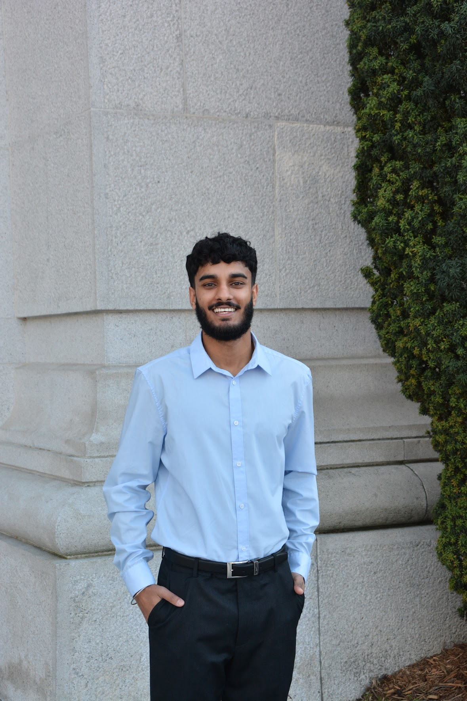

Hi — I'm Varmin.
I’m a Data Scientist and Engineer at UC Berkeley. I specialize in building production-ready pipelines and ML systems that turn messy, real-world data into scalable solutions—particularly in finance and cloud reliability.
Berkeley, CA • Open to Data/ML Engineering Roles
Experience
Boeing — Data Science Intern
- Led development of automated ETL pipelines processing millions of rows daily, reducing manual extraction time by 65%.
- Built reusable data-standardization libraries to enforce consistent schemas across cross-functional dashboards.
- Implemented data quality monitoring to proactively identify drift, reducing troubleshooting time by 30%.
Python, Pandas, SQL, Docker, Smartsheet API
Penserra — Data Engineer Intern
- Engineered a cloud-based NLP ingestion pipeline using Azure and Gemini API for real-time trade compliance (99% accuracy).
- Transformed unstructured logs and OCR-scanned PDFs into structured formats, increasing throughput by 35%.
- Automated operational metrics with Supabase, saving 15+ hours weekly in manual reporting.
PySpark, Azure, Gemini API, PostgreSQL, OCR
Featured Projects
Panorama — Multi-Partisan News Search
A search engine designed to surface balanced news coverage. Uses FastAPI, React, and MongoDB with semantic embeddings to deduplicate and rank articles from across the political spectrum.
FastAPI, sentence-transformers, OpenAI API, Docker
Automated Fault Detection
Orchestrated an Airflow pipeline analyzing 100k+ GitHub commits daily for regressions using trained classifiers. Reduced processing time by 75%.
Airflow, Redis, ML Classification, Python
Skills
PythonSQLRC++Java
PyTorchScikit-learnAWSAzureDockerKubernetesAirflow
Education
University of California, Berkeley
BA Data Science (2026) | MA Statistics (2027)
Relevant Coursework: Applied Machine Learning (Grad), Deep Neural Networks, Computer Architecture, Probabilistic Modeling.